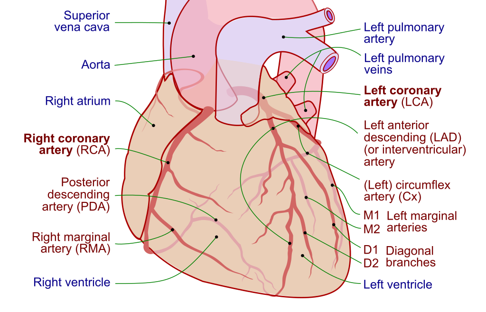
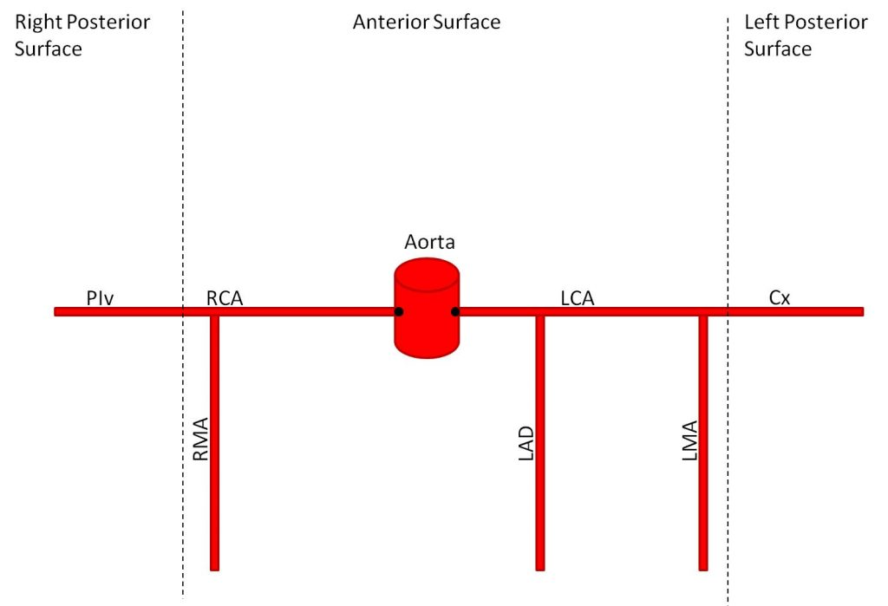

Coronary Artery Anatomy
Aortic Sinuses
These are small openings within the aorta behind the right and left flaps of the AV. They give rise to the left and right coronary arteries.
Left coronary artery
This branches to yield the:
- left anterior descending (LAD); this supplies the anterior IVS, left ventricular sinus, anterolateral papillary muscle, anterior LV
- branches of the LAD are called diagonal branches (D1, D2, etc)
- the left circumflex (LCX). In 1/4 of people, the LCX contributes to the posterior interventricular artery (posterior descending artery /PDA). It also feeds the lateral/posterior LV, anterolateral papillary muscle
- branches of the LCX are called left "obtuse" marginal arteries (M1, M2, etc)

Right coronary artery
Branches to form:
- right marginal artery (RMA) anteriorly which supplies the RV
- sinoatrial nodal artery (supplies the SA node)
- in 80-85% of patients (therefore most patients are right dominant), branches into the PDA posteriorly; this supplies the AVN, posterior IVS and ventricles, and posteromedial papillary muscle

References
- Coronary Artery Anatomy - Cardiovascular - Medbullets Step 1
- Vasculature of the Heart - TeachMeAnatomy